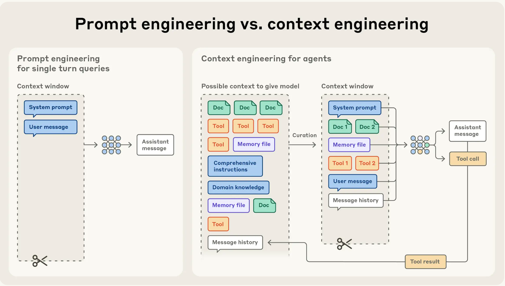
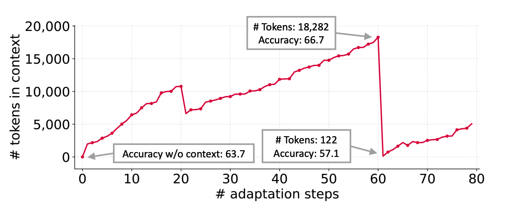
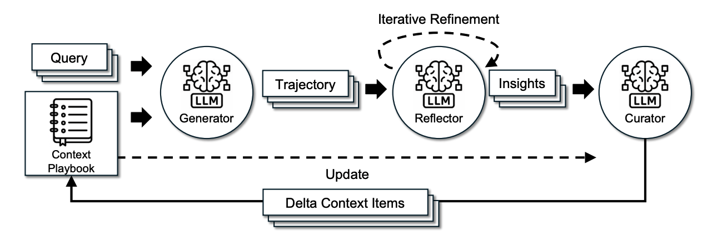

For developers and researchers building sophisticated AI systems, enhancing Large Language Model (LLM) performance is the ultimate goal. While fine-tuning has been a go-to method, a more dynamic and computationally efficient paradigm, Context Engineering, is rapidly proving its value.
As outlined by AI safety and research company Anthropic, effective context engineering involves strategically constructing the input provided to an LLM to guide its reasoning. This is not just about writing a good prompt; it's about systematically managing instructions, examples, and retrieved data to shape the model's behavior at runtime.
Building on this principle, a new paper from researchers at Stanford, SambaNova Systems, and UC Berkeley introduces Agentic Context Engineering (ACE). ACE is a sophisticated framework designed to overcome the fundamental limitations of existing context adaptation methods, enabling LLMs to learn and self-improve from their own operational feedback.
Resources: Read the full paper | Try the sample code in Colab

Existing context adaptation techniques often run into two critical failure modes that limit their effectiveness in complex, real-world scenarios.
Many prompt optimizers are designed to produce concise, broadly applicable instructions. However, this "brevity bias" can be detrimental. In the process of summarizing, these methods often discard essential domain-specific heuristics, tool-use guidelines, or common failure modes that are vital for high performance on specialized tasks. The result is a generic prompt that fails to capture the nuanced strategies required by agents or knowledge-intensive applications.
A more dramatic failure mode is context collapse. This phenomenon occurs when an LLM, tasked with repeatedly rewriting its own context, suddenly compresses it into a short, uninformative summary, leading to a catastrophic drop in performance. The paper documents a stark example on the AppWorld benchmark: at one step, the context contained 18,282 tokens and achieved an accuracy of 66.7%. In the very next step, the model collapsed this context to just 122 tokens, and accuracy plummeted to 57.1%—significantly worse than the baseline accuracy of 63.7% achieved with no adaptation at all.

To prevent these failure modes, ACE treats context not as a static instruction but as an evolving "playbook" that accumulates and refines strategies over time. It achieves this through a structured, multi-agent architecture with a clear division of labor:

The Generator: This LLM agent is the primary problem-solver. It takes a new query and the current Context Playbook as input and produces a reasoning trajectory to solve the task.
The Reflector: This agent acts as a critic. It analyzes the Generator's trajectory, using execution feedback and other signals to distill concrete insights and lessons from both successes and errors. It can optionally perform this analysis over multiple iterations to refine its insights.
The Curator: This agent is the knowledge manager. It synthesizes the lessons from the Reflector into compact, structured updates called "delta context items". These items are then merged deterministically into the main playbook using lightweight, non-LLM logic, which avoids the risk of an LLM-induced context collapse during the update phase.
This modular workflow allows for multi-epoch adaptation, where ACE can revisit the same training queries multiple times to progressively strengthen the playbook's strategies.
ACE's robustness and efficiency stem from a few core technical designs that fundamentally change how context is managed.
The ACE playbook is not a single, monolithic prompt. Instead, it is a collection of structured, itemized "bullets". Each bullet is a discrete unit of knowledge with two components:
This itemized design enables localization (only relevant bullets are updated), fine-grained retrieval (the Generator can focus on the most pertinent knowledge), and efficient, incremental adaptation. By producing compact "delta contexts" instead of performing full rewrites, ACE avoids the high computational cost and latency of traditional methods while ensuring past knowledge is preserved.
To prevent the playbook from becoming unwieldy, ACE employs a grow-and-refine mechanism. While new bullets are appended, a periodic de-duplication step prunes redundancy by comparing bullets via semantic embeddings. This refinement can be performed proactively after each update or lazily when the context window is exceeded, balancing latency and accuracy based on application needs.
ACE's design translates directly into state-of-the-art performance and efficiency.
Across all benchmarks, ACE consistently outperformed strong baselines, achieving average accuracy gains of 10.6% on agent tasks and 8.6% on domain-specific benchmarks.
Agent (AppWorld): ACE reached 59.5% accuracy, far surpassing the baseline (42.4%) and other adaptive methods like Dynamic Cheatsheet (51.9%). Notably, on the official AppWorld leaderboard, ACE (using the open-source DeepSeek-V3.1 model) matched the performance of the top-ranked IBM CUGA agent (powered by GPT-4.1) and surpassed it on the harder test-challenge split.
Domain-Specific (FiNER & Formula): ACE delivered strong results in financial analysis, scoring 78.3% on FiNER and 76.5% on Formula, demonstrating its ability to build comprehensive, domain-specific knowledge.
The incremental update mechanism makes ACE incredibly efficient. The framework achieved an average 86.9% reduction in adaptation latency compared to existing methods.
Offline (vs. GEPA on AppWorld): ACE was 82.3% faster and required 75.1% fewer rollouts (model inferences).
Online (vs. DC on FiNER): ACE reduced latency by 91.5% and cut token-related dollar costs by 83.6%.
The ACE framework has significant implications for building scalable and maintainable AI systems.
While ACE produces longer, more detailed contexts, this does not necessarily lead to higher serving costs. Modern inference infrastructures leverage techniques like KV cache reuse, compression, and offloading, which amortize the cost of long contexts over time.
More importantly, ACE offers a flexible and efficient path toward online and continuous learning—a cheaper alternative to constant model fine-tuning. Because the context playbook is human-interpretable, it also opens up possibilities for selective unlearning, allowing operators to remove outdated or incorrect information to address privacy or legal constraints, a critical feature for responsible AI deployment.
By shifting the focus from static models to dynamic contexts, ACE provides a robust and powerful blueprint for the next generation of self-improving AI.